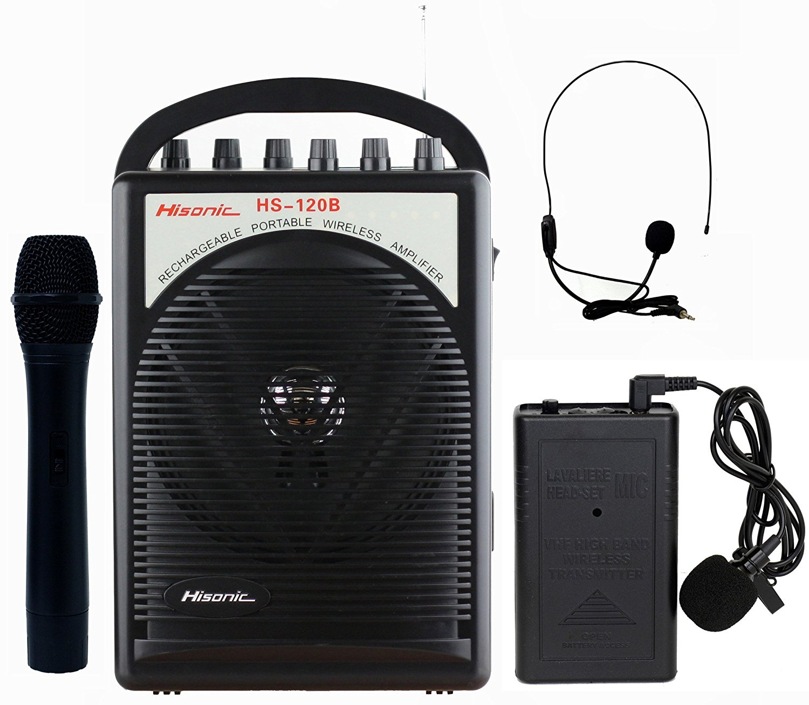
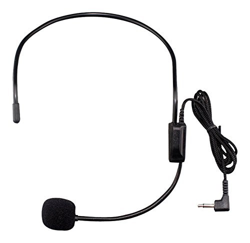

5 TIPS FOR CLASSROOM MANAGEMENT
5 Tips for Classroom Management
1. Rules mean nothing without a relationship
Relationships matter. Start building relationships with your students. Ask people how they are today, ask them how they are doing with their assignments, if you give them advice on solving a problem, check in with them to see how it’s going. Eventually people will start talking about their lives then it’s up to you where you’re going to set boundaries between life and work.

2. Set expectations for the entire class period
Think through each classroom procedure and make those expectations clear with examples. For example, think about how you are going to get the class’s attention throughout class and how you would like them to respond.
I used two different types of call and response. One type was verbal. When I said “class” the whole class would say “yes” and whatever WAY I said class was the WAY they said yes. So if I said, “class CLASS class” they would respond with, “yes YES yes.” This became a lot of fun for me and the students when I started using musical patterns while saying class. I often used musical patterns that were present in the music they were learning so that all aspects of the class were connected.
3. Get buy-in
Students will be more enthusiastic about activities in which they have some measure of autonomy. Give them choices or control over some aspect of an activity.
For example, I wanted students to have buy in about their music for every show. So, I had them form groups and come up with movements for the songs that the whole class could use for the concert. Each group came up with their own movements and shared them with the class. Then I used a few movements from each group for the final choreography.
4. Speak loud enough so the whole room can hear you OR get a microphone!
Everyone loses their voice sometimes. Invest in a microphone for your classroom. Furthermore, when to get the attention of a group of students who are discussing things loudly, simply turn up the volume on your microphone. You won’t have to exert the effort of yelling, and you won’t lose your voice before the next class.
I recommend this microphone and headset:
 5. Once you have buy in from most people, don’t let one person spoil the rest
Sometimes there’s one person who spoils things for the group with their actions or words. Give this person a warning, and if their actions persist, remove them from the group. They can sit away from the group and have another chance on another day. It’s important to think of what will benefit everyone in the room. If one person is disrupting the group, they will benefit from some down time and the perspective of looking at how everyone else interacts. The group will also benefit from the new time and energy they can spend concentrating on their work.
This is an extra google font called "Cabin". Just to show I can do it. The other google fonts came with the template.
I
need
15
selectors